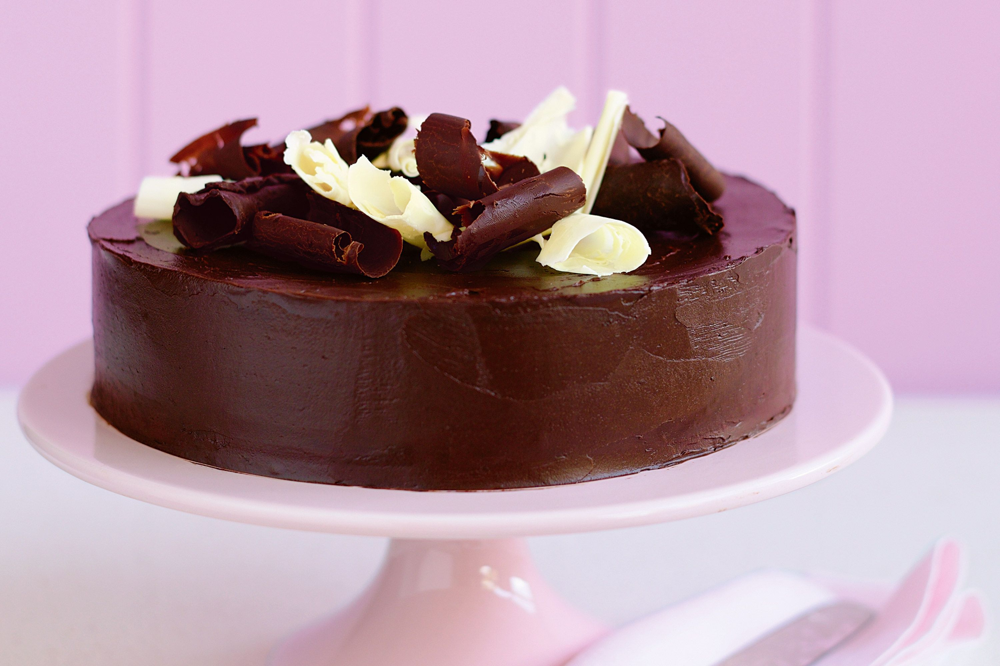

Chocolate Cake

Chocolate Cake
Rich in chocolate flavour with a tender-moist crumb, and fluffy with the perfect amount of sweetness. This is what chocolate dreams are made of!
You will need...
- Baking spray with flour
- 1 cup semisweet chocolate chips
- 3/4 cup hot brewed coffee
- 3/4 cup canola oil
- 3/4 cup sour cream
- 4 large eggs
- 1 teaspoon vanilla extract
- 2 cups all-purpose flour
- 2 cups granulated sugar
- 1/4 cup Dutch-process cocoa blend
- 1 teaspoon kosher salt
- 1 teaspoon baking soda
- Chocolate-Cream Cheese frosting
Directions
- Preheat oven to 350°F. Lightly coat 3 (9-inch) round cake pans with baking spray.
- Combine chocolate chips and hot coffee in a medium bowl; let stand 2 minutes. Stir until chocolate is melted, about 1 minute. Whisk in oil, sour cream, eggs, and vanilla until smooth.
- Stir together flour, sugar, cocoa, salt, baking soda, and baking powder in a large bowl. Stir in wet ingredients. Divide batter evenly among prepared pans (about 2 cups per pan).
- Bake in preheated oven until a wooden pick inserted in center comes out clean, 20 to 25 minutes. Let cool in pans 10 minutes. Invert cake layers onto wire racks, and let cool completely, about 1 hour.
- Spread frosting between layers and on top of cake. Spread a thin layer of frosting on sides of cake, smoothing with a spatula. Chill cake 30 minutes. Spread an additional layer of frosting on top and sides of cake.
Return to Homepage